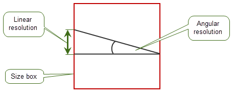

| |
Model Structure |
| <<< Physical Layout | Chapters | Schema Definitions >>> |
This section describes the XT Topology model, it gives an overview of how the nodes in the XT data are joined together. In this section the word ‘entity’ means a node which is visible to an XT application - a table of which nodes are visible at the XT interface appears in the section 'Node Types'.
The topological representation allows for:
Compound bodies are containers for child bodies that are expected to be related in some way such that they are able to share some physical aspects. Within compound bodies, a child body is used to define one representation of a part. Standard bodies are the basic “unit” of modelling used in Parasolid. A child body is identical to a standard body except that it can share geometry where appropriate with other child bodies within the compound body.
Each entity is described, and its properties and links to other entities given.
This section provides information on some XT Format terminology used in this manual.
In this section a set is called finite if it can be enclosed in a ball of finite radius - not that it has a finite number of members.
A set of points in 3-dimensional space is called open if it does not contain its boundary.
Back-pointers, next and previous pointers in a chain, and derived pointers are not described explicitly here. For information on this see the following description of the schema-level model.
XT data structures use fixed accuracies called linear resolution and angular resolution, which can be described as follows:
By default, in XT data points are not considered coincident unless they are less than 1.0e-8 units apart (linear resolution). Directions are considered to be parallel if they differ by less than 1.0e-11 radians (angular resolution). It is important that any data passed to a Parasolid-enabled application is at least this accurate. You are recommended not to change these values when authoring XT data.
All parts of a body must be within a box called the size box, as shown in Figure 4-1, whose size is 1000 by 1000 by 1000 and is centered at the origin.
You are highly recommended to set the default unit to one meter, giving 1 kilometer as the maximum distance, in any one direction, that can be modelled.
To handle the angular resolution of arcs correctly, the radius used when representing an arc must be less than a factor of 10 times the dimension of the size box.
Figure 4-1 Linear and angular resolution
An assembly is a collection of instances of bodies or assemblies. It may also contain construction geometry. An assembly has the following fields:
An instance is a reference to a body or an assembly, with an optional transform:
A body is a collection of faces, edges and vertices, together with the 3-dimensional connected regions into which space is divided by these entities. Each region is either solid or void (indicating whether it represents material or not).
The point-set represented by the body is the disjoint union of the point-sets represented by its solid regions, faces, edges, and vertices. This point-set need not be connected, but it shall be finite.
A body has the following fields:
A body has one or more regions. These, together with their boundaries, make up the whole of 3-space, and do not overlap, except at their boundaries. One region in the body is distinguished as the exterior region, which shall be infinite; all other regions in the body shall be finite.
A region is an open connected subset of 3-dimensional space whose boundary is a collection of vertices, edges, and oriented faces.
Regions are either solid or void, and they may be non-manifold. A solid region contributes to the point-set of its owning body; a void region does not (although its boundary will).
Two regions may share a face, one on each side.
A region may be infinite, but a body shall have exactly one infinite region. The infinite region of a body shall be void.
A region has the following fields:
The shells of a region do not overlap or share faces, edges or vertices.
A region may have no shells, in which case it represents all space (and will be the only region in its body, which will have no faces, edges or vertices).
A shell is a connected component of the boundary of a region. As such it will be defined by a collection of faces, each used by the shell on one 'side', or on both sides; and some edges and vertices.
A shell has the following fields:
Each pair represents one side of a face (where true indicates the front of the face, i.e. the side towards which the face normal points), and means that the region to which the shell belongs lies on that side of the face. The same face may appear twice in the shell (once with each orientation), in which case the face is a 2-dimensional cut subtracted from the region which owns the shell.
Edges are called wireframe if they do not bound any faces, and so represent 1-dimensional cuts in the shell's region. These edges are not shared by other shells.
This is only non-null if the shell is an acorn shell, i.e. it represents a 0-dimensional hole in its region, and has one vertex, no edges and no faces.
A shell shall contain at least one vertex, edge, or face.
A face is an open finite connected subset of a surface, whose boundary is a collection of edges and vertices. It is the 2-dimensional analogy of a region.
A face has the following fields:
A loop is a connected component of the boundary of a face. It is the 2-dimensional analogy of a shell. As such it will be defined by a collection of fins and a collection of vertices.
A loop has the following fields:
Each fin represents the oriented use of an edge by a loop. The sense of the fin indicates whether the loop direction and the edge direction agree or disagree. A loop may not contain the same edge more than once in each direction.
The ordering of the fins represents the way in which their owning edges are connected to each other via common vertices in the loop (i.e. nose to tail, taking the sense of each fin into account).
The loop direction is such that the face is locally on the left of the loop, as seen from above the face and looking in the direction of the loop.
This is only non-null if the loop is an isolated loop, i.e. has no fins and represents a 0-dimensional hole in the face.
Consequently, a loop shall consist either of:
A halfedge represents the oriented use of an edge by a loop.
A halfedge has the following fields:
|
Note: Halfedges are referred to as ‘fins’ in the PK Interface. |
An edge is an open finite connected subset of a curve; its boundary is a collection of zero, one or two vertices. It is the 1-dimensional analogy of a region. An edge has the following fields:
The ordering of the fins represents the spatial ordering of their owning faces about the edge (with a right-hand screw rule, i.e. looking in the direction of the edge the fin ordering is clockwise). The edge may have zero or any number of fins; if it has none, it is called a wireframe edge.
A vertex represents a point in space. It is the 0-dimensional analogy of a region. A vertex has the following fields:
An attribute is an entity which contains data, and which can be attached to any other entity except attributes, fins, lists, transforms or attribute definitions. An attribute has the following fields:
There are a number of system attribute definitions which XT creates on startup. These are documented in the section 'System Attribute Definitions'. XT applications can create user attribute definitions during an XT session. These are included in the XT data along with any attributes that use them.
A feature is a collection of entities in the same part. Features in assemblies may contain instances, surfaces, curves and points. Features in bodies may contain regions, faces, edges, vertices, surfaces, curves, points, loops and other features.
|
Note: Features are referred to as ‘groups’ in the PK Interface. |
All entities in a part, other than halfedges and 2D B-curves referenced by SP-curves, have a non-zero integer identifier. All non-zero integer identifiers are unique within a part. This is intended to enable the entity to be identified within the XT data.
|
Note: Identifiers are referred to as ‘node-ids’ in the PK Interface. |
Thus the relations between entities can be represented in matrix form as follows. The numbers represent the number of distinct entities connected (either directly or indirectly) to the given one.
XT bodies have a field body_type which takes values from an enumeration indicating whether the body is
A general body is not necessarily non-manifold, but at the same time it is not constrained to be manifold, connected, or of a particular dimensionality (indeed, it may be of mixed dimensionality).
Solid, sheet, and wire bodies are best regarded as special cases of the topological model; for convenience we call them the manifold body types (although as stated above, a general body may also be manifold).
In particular, bodies of these manifold types must obey the following constraints:
So each connected component will be either: closed, where every vertex has exactly two edges; or open, where all but two vertices have exactly two edges each.
A wire is called open if all its components are open, and closed if all its components are closed.
These constraints ensure that the solid is manifold.
| <<< Physical Layout | Chapters | Schema Definitions >>> |